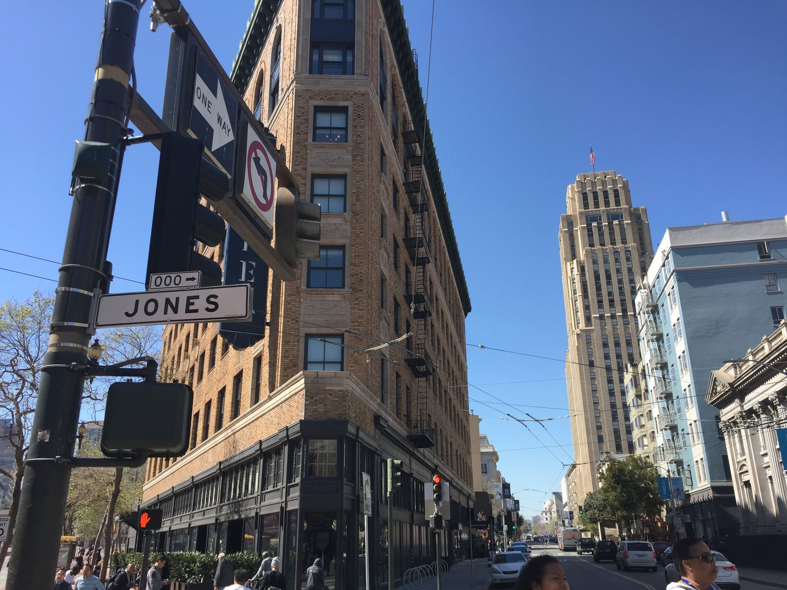
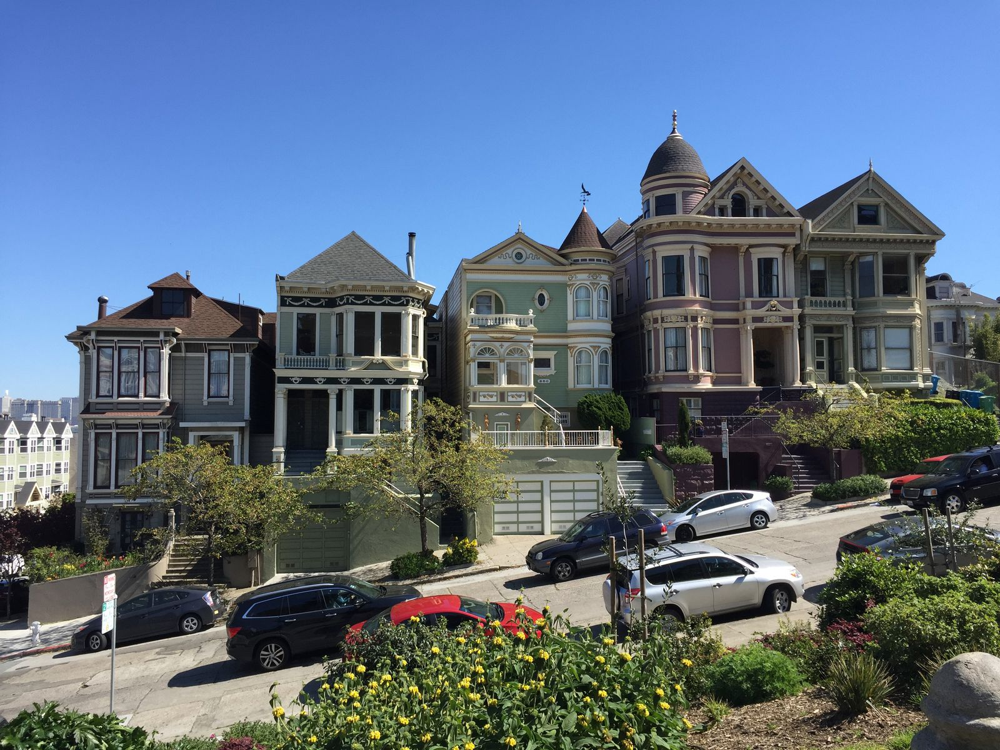
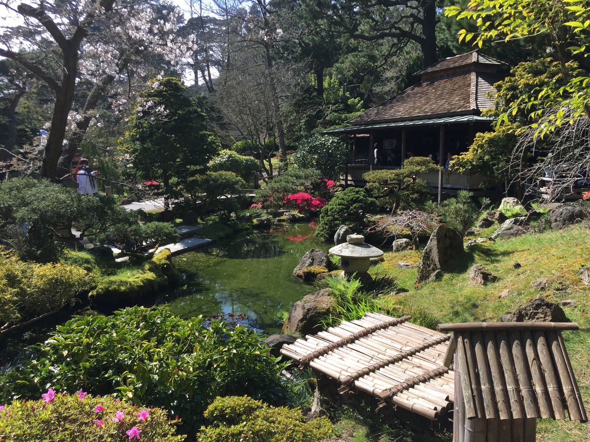
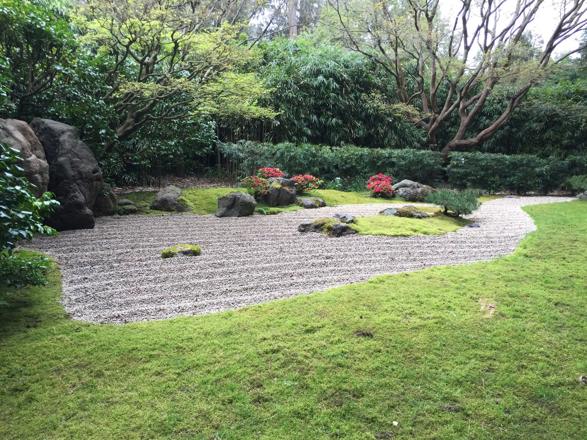
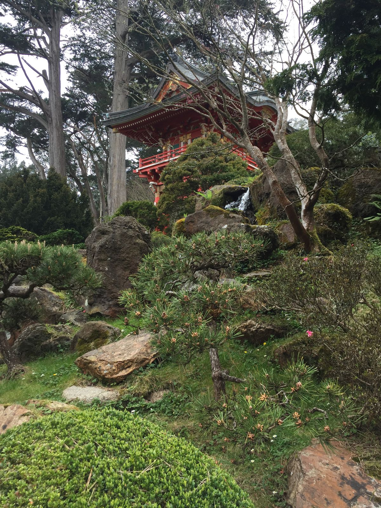
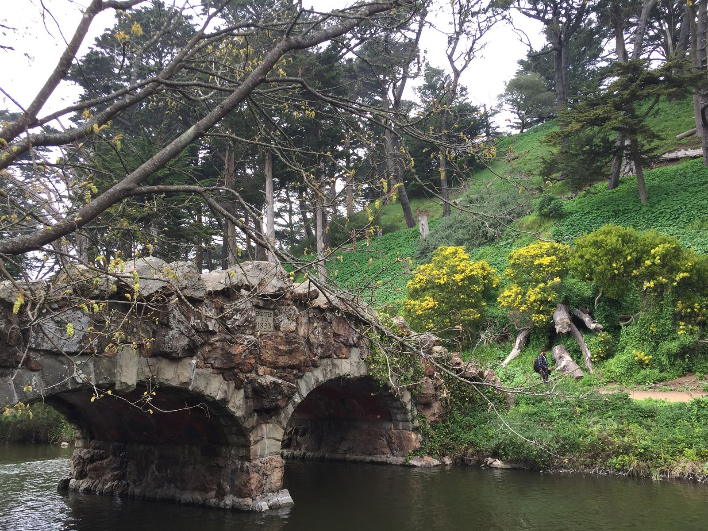
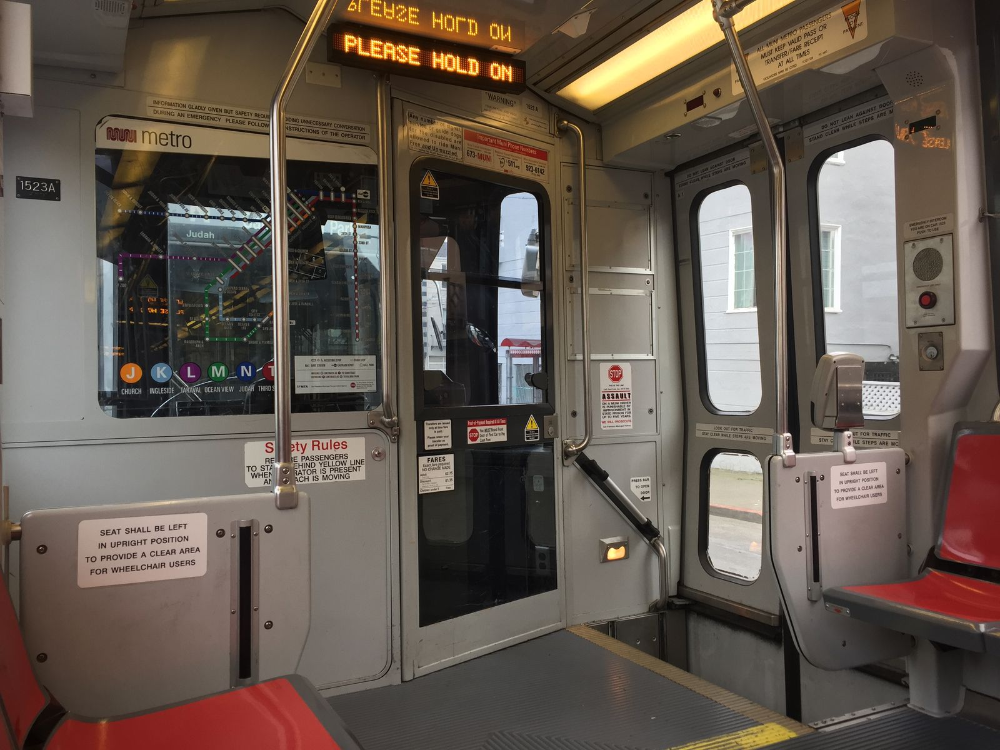
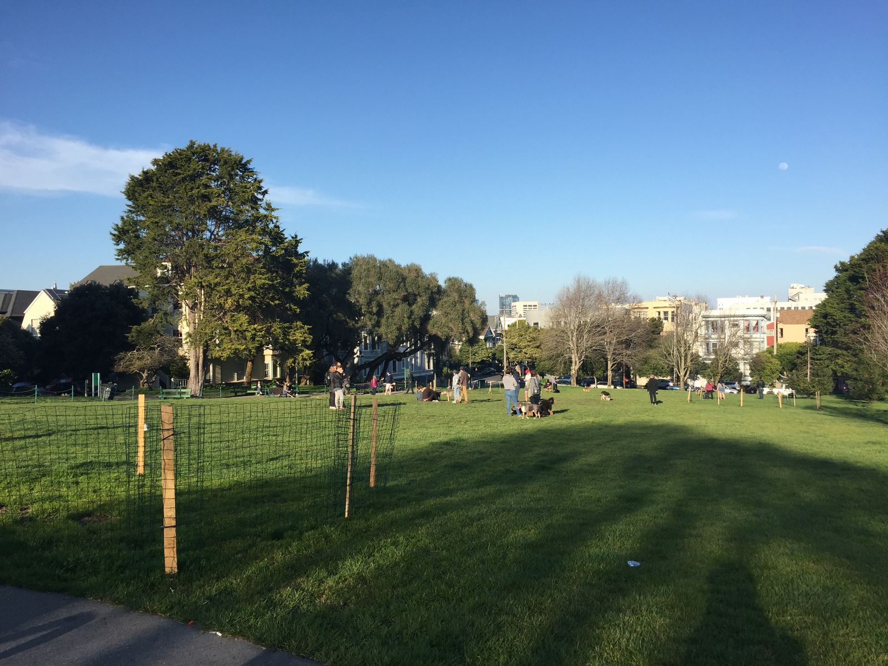

Golden Gate Park and Sore Feet
Historically, I will spend solo city trips walking until my feet bleed. Usually, I am not wearing the right shoes. In this case, I thankfully do not have bleeding feet. They are just very sore and blistered. I have learned that Allbirds are extremely comfortable, but they are not made for walking nine miles in a day. Lesson learned.
The nine mile walk, however, was terrific. I started out downtown San Francisco, in the SOMA neighborhood and walked east until I reached the Golden Gate Park. It was a beautiful day, low 70's and sunny, and I wished I had something other than jeans. As I moved further west towards the coast, the weather shifted to 60 and foggy. I was cold even with my sweater. From the warmth to the cool, I visited the Conservatory of Flowers, California Academy of Sciences (though I opted not to go in because I didn't have the 3-4 hours of time recommended by Yelp), the Japanese Tea Garden (which had a strange $9 entrance fee, but was generally worth it), Strawberry Hill (a small island in the middle of the park), and the quieter area west of State Route 1 which bisects the park.
Getting back to dinner, I took the N trolley, which took me through the quant Sunset District and by the Duboce dog park. Of course, I elected to get off one stop early and visit the dog park before going to dinner.

Starting on Market St and Jones, the namesake of my cousin's dog 
Quintessential San Francisco homes 
The entrance of the Japanese Tea Garden at Golden Gate Park 
A zen rock garden 
A pagoda in the garden Some mushrooms. Can anyone identify these? I love taking photos of ducks—these mallards are no exception 
The bridge to Strawberry Hill island 
Overwhelmed by signs on the trolley 
They're all good dogs
One thing to note, which I don't have any photos of, is the massive inequality on full display in downtown San Francisco. It is less a stretch than I want it to be to say that most people I saw downtown were either homeless or millionaires. There were two completely different worlds, living right on top of one another not even seeing each other. I have seen this environment in the past, but not in a developed country.
Earlier this week, I finished Rutger Bregman's book in which he outlines and advocates for a universal basic income. He argues that the poor are poor because they don't have money—that they lack capital to move out of poverty. Citing many studies, he shows that giving the poor (in some cases the homeless) money with no strings attached actually reduces public spending and shrinks the government—in this case policing costs, sanitation costs, and court costs. That San Francisco, a progressive city in a progressive state, has failed so horribly at solving homeless and inequality is disheartening. San Francisco has always been a city of change. Perhaps it will soon take the lead in helping the homeless find homes and reducing inequality.
Of note, once I walked a few blocks outside of the downtown area, I no longer saw this inequality. Though it was overwhelming downtown, it does not permeate the entire city.